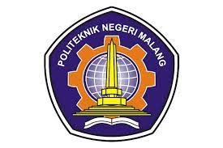

Politeknik Negeri Malang, awalnya bernama Program Pendidikan Diploma Bidang Teknik. Universitas Brawijaya, dibuka berdasarkan Surat Keputusan Dirjen DIKTI, MENDIKBUD No. 03/DJ/Kep/1979.  didirikan oleh Pemerintah Indonesia melalui dana Bank Dunia dengan Tenaga Ahli dari Swiss. Pada tahun 1982, Susunan Organisasinya diatur melalui Keputusan Presiden Republik Indonesia No. 59 Tahun 1982, bernama Fakultas Non Gelar Teknologi, Universitas Brawijaya dan mulai menerima mahasiswa angkatan I melalui 4 (empat) jurusan, yaitu Jurusan Teknik Elektronika, Jurusan Teknik Listrik, Jurusan Teknik Mesin, dan Jurusan Teknik Sipil.